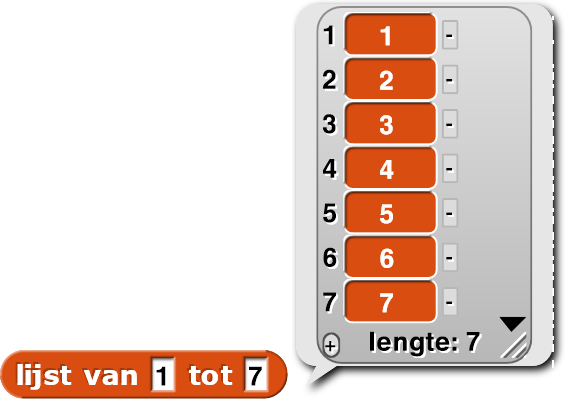

Algoritmes Vergelijken
In deze les, ga je leren dat bepaalde manieren sneller een probleem oplossen dan andere.
Op deze pagina, ga je twee algoritmes vergelijken voor het optellen van de getallen van
1
tot een bepaald invoergetal (zoals hieronder).
Deze verschillende aanpakken hebben altijd dezelfde uitkomst voor dezelfde invoer. Alex en Bo bespreken hun aanpak:
combine om de lijst op te tellen.
Het blok
heeft
als
invoer een operatie (met twee lege invoervakken) en een lijst, het rapporteert slecht één
resultaat (dus niet een lijst): de combinatie van de elementen in de lijst nadat de gegeven operatie
is
uitgevoerd. Bijvoorbeeld:
Combine is een functie van hogere orde.
Dit betekent dat het een functie is die als invoer een functie heeft. Je hebt al een aantal
functies
van hogere orde gezien:
for each (in Hoofdstuk 2 Les 2),
houd (in Hoofdstuk 2 Les 3) en
map (in Hoofdstuk 3
Les 1
). Jij kiest een operatie en combine voert die operatie uit door alle items in de
invoerlijst te combineren en rapporteert dan de uitkomst.
Merk op dat de functie die gebruikt wordt om de items te combineren altijd twee lege
invoervakken heeft.
Niet alleen map maar ook houd hadden maar één leeg vak in hun
invoerfunctie maar combine heeft er twee.
map en houd, wordt
combine
vooral gebruikt samen met deze vijf functies: Voor blokken die je zelf zou schrijven zijn er maar 2 waarschijnlijke kandidaten:
Waarom zijn het er zo weinig?


| 1 | 2 | 3 | 4 | 5 | 6 | 7 | 8 | 9 | 10 | 11 | 12 | 13 |
| 13 | 12 | 11 | 10 | 9 | 8 | 7 | 6 | 5 | 4 | 3 | 2 | 1 |
| 1 | 2 | 3 | 4 | 5 | 6 | 7 | 8 | 9 | 10 | 11 | 12 | 13 | |
| + | 13 | 12 | 11 | 10 | 9 | 8 | 7 | 6 | 5 | 4 | 3 | 2 | 1 |
| 14 | 14 | 14 | 14 | 14 | 14 | 14 | 14 | 14 | 14 | 14 | 14 | 14 |
Dan bouwt Bo het blok en Alex helpt met debuggen.
- Bespreek deze twee algoritmes en stel een hypothese op: Welk algoritme denk je dat efficiënter is? Waarom?
-
Gebruik voor Alex’s methode, het blokImplementeer een
numbers from () tot ()in het Variabelenpalet.som-van-1-tot-algoritme. Je kan Alex' methode gebruiken (met gebruik vancombineomsumte bouwen), je kan Bo's formule gebruiken of je kan het op je eigen manier doen.
"H5L3-RapporteurTimer"
- Werk met een ander team om Alex' en Bo's algoritmes te vergelijken met een groot aantal invoeren. Bepaal welke efficiënter is (welke is er sneller).
- In de vorige stap heb je met experimenten bepaald welk algoritme sneller is. Je kan dit ook doen
door
logisch te redeneren om te bewijzen dat het ene algoritme sneller is dan het andere:
- Als je de getallen van 1 tot 100 optelt, hoeveel rekenkundige operaties (+, –, ×, ÷) zal je dan nodig hebben om Bo's algoritme uit te voeren?
- Hoeveel rekenkundige operaties zal Alex' methode gebruiken?
- En als je de getallen van 1 tot 1000 optelt?
- Zijn de aantallen operaties logisch als je ze vergelijkt met de uitkmosten van de experimenten van de vorige stap?
- Als je een diagram-app
maakt, probeer dan y=
som van 1 tot (x)te plotten.